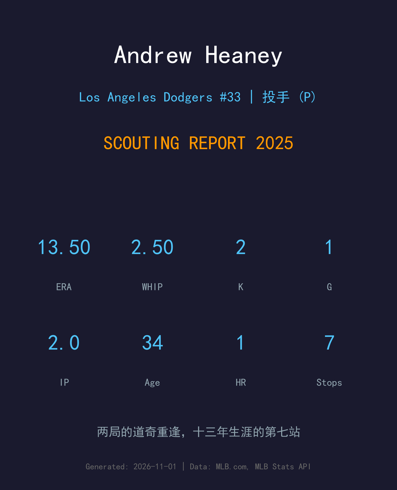
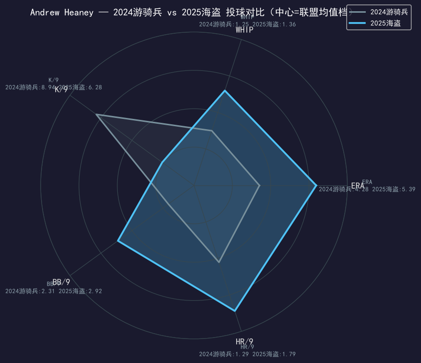
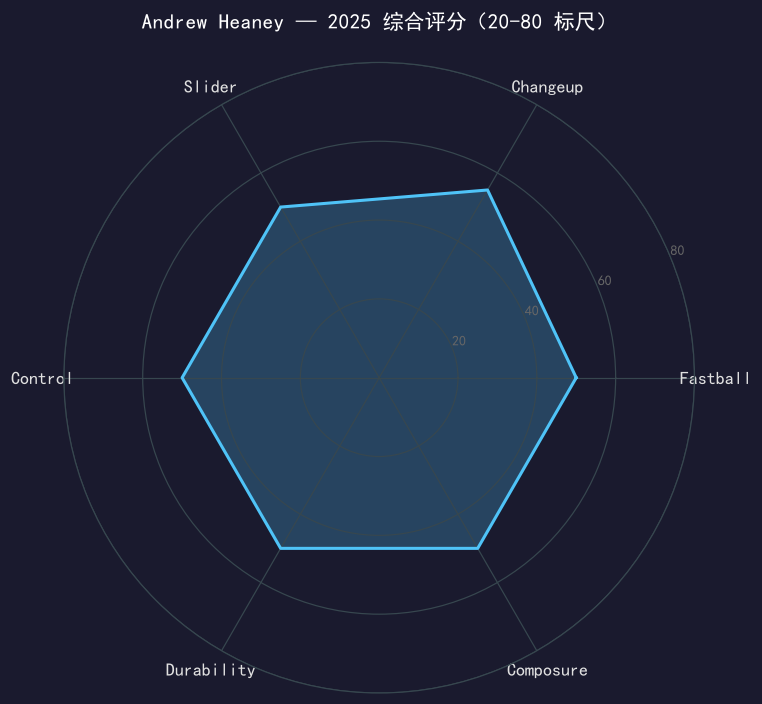

Los Angeles Dodgers #33 | 投手 | 左投 | 两局的道奇重逢，十三年生涯的第七站

Andrew Heaney 的 2025 年写成一行字就是：海盗 26 场先发 5.39 → 九月被释 → 9 月 1 日与道奇签下小联盟合约 → 9 月 27 日名单扩编选入 → 9 月 29 日大联盟登板 2 局 → 11 月 2 日选择成为自由球员。两局，13.50，一件 33 号球衣——这是三十四岁左投职业生涯最简短的一章，却也是最富戏剧性的一章。
数字当然难看：2 局丢 3 分、被打 4 支安打含 1 轰、WHIP 2.50。但这场球的语境比内容重要——那是常规赛收官阶段的大比分垃圾时间，道奇给他一个回家谢幕的舞台。2022 年他曾在这里投出生涯最好的 16 场 3.10，那年的 Heaney 是国联最难对付的左投之一；三年后他接受的，是同一块投手丘上的告别演出。
从 2025 年 11 月的视角看，Heaney 的生涯站在十字路口：34 岁、全年 5.39 的先发成绩、以及一张写满七支球队（马林鱼→天使→洋基→道奇→游骑兵→海盗→道奇）的履历表。他还能投——变速球依旧是好球种——但大联盟给他的耐心，大概只剩最后一次春训邀请。
洛杉矶天使时代的高峰：30 场先发、180 局、180 次三振、自责分率 4.15。那个赛季他每九局三振超过 9 人次，是美联最被低估的左投之一。
加盟道奇的第一年，16 场（14 先发）72.2 局自责分率 3.10、WHIP 1.09、110 次三振——生涯最低自责分率。道奇开发组把他的变速球从「不错」打磨成了「杀手级」。
随德州游骑兵连续两年扛起先发轮值：2023 年 147.1 局 10 胜，2024 年 160 局 159 次三振——生涯最后两段「完整先发年」。
以下为道奇段数据（2025-09-01 小联盟合约签约、2025-09-27 选入大联盟、2025-11-02 选择自由球员）：

| 赛季 | 球队 | G | GS | ERA | WHIP | IP | SO | BB |
|---|---|---|---|---|---|---|---|---|
| 2024 | TEX | 32 | 31 | 4.28 | 1.25 | 160.0 | 159 | 41 |
| 2025 | PIT | 26 | 23 | 5.39 | 1.36 | 120.1 | 84 | 39 |
| 2025 | LAD | 1 | 0 | 13.50 | 2.50 | 2.0 | 2 | 1 |
从游骑兵到海盗的下滑曲线清晰可辨：三振率从 8.94 跌到 6.28，全垒打率从 1.29 升到 1.79——90 mph 出头的速球（2025 年均速 90.1）在第三次完整先发年中终于压不住大联盟的棒头。5.39 不是运气问题，是球速-三振模型失速后的必然结果。道奇那 2 局垃圾时间样本太小，不构成任何评估意义，但它完成了任务：让一个 12 年老兵穿着最熟悉的球衣结束了赛季。
2025 赛季真实配球数据（MLB Stats API pitchArsenal，海盗+道奇汇总，六球种博物馆）：
转速型速球，靠上旋位移而非球速取胜。34 岁的 90.1 mph 已低于大联盟平均，容错空间所剩无几。
生涯招牌。8 mph 速差配上极佳的投球动作一致性，是他从 2018 年一路吃到 2024 的根基——2022 年在道奇被开发组点石成金的就是这颗球。
横向位移可靠的 80 档滑球，主要用来对付左打与两好球后的追打。
2025 年新加入配球的沉球版本，诱导滚地球但速差不明显。
传统 12-6 曲球，作为配球节奏的点缀。
罕见的极慢曲球（73.5 mph），与大曲球形成 17 mph 落差——纯展示品，但证明他愿意为打席添加任何元素。
Heaney 的生涯转折点几乎都与道奇有关：2022 年他带着 5 档武器来到洛杉矶，道奇的开发组砍到三档（速球+变速+滑球）、优化了变速球的握法和进垒点，于是有了 3.10 的生涯年。这段经历解释了 2025 年 9 月的重逢——当海盗的五档混编配方失败（5.39）后，他第一个拨通的电话打给了洛杉矶。遗憾的是，这次道奇救不了球速：90 mph 是所有 pitch design 的地基，地基松了，楼就修不起来。
从 2014 年马林鱼首秀到 2025 年道奇谢幕，Heaney 的足迹遍布两个联盟：天使七年（2015-21，含 180 局 180K 的高峰）、洋基三个月、道奇两段、游骑兵两年、海盗一年。他是典型的「二轮秀天花板」球员——永远足够好到有一支球队需要他，又永远差一口气成为某支球队的答案。957 次生涯三振、近 1200 局，这是一份扎实的职业履历。
9 月 29 日的 2 局 13.50 在统计上是噪音，在叙事上是谢幕。道奇让他登板的理由和让任何老将登板的理由一样：尊重。而对 Heaney 自己，这是确认「油箱里还有油」的仪式——变速球还在 82 mph 落进好球带下缘，这就够他在某个春天的邀请名单上再试一次。

等待最后一通电话的老兵左投
C+ 级 / 春训邀请候选人
道奇 2025 季后赛夺冠之路：外卡 2-0 红人 → NLDS 3-1 费城人 → NLCS 4-0 酿酒人 → 世界大赛 4-3 多伦多蓝鸟。
Heaney 与这条夺冠路擦肩而过——9 月 27 日被选入、9 月 28 日被下放、9 月 29 日再被召回的名单来回，说明道奇一度认真考虑过把他带进十月。最终他没有出现在任何一场季后赛的 boxscore 里。冠军游行没有他的位置，但那件 33 号球衣会成为他收藏品里最特别的一件：他职业生涯的第一段高峰和最后一个赛季，都写着同支球队的名字。
Heaney 的 2026 年只有一种打开方式：小联盟合约加春训邀请，然后在一群 25 岁的竞争者里证明自己那颗变速球还能骗到大联盟打者。左投的身份给了他额外的生存空间——每一支球队都愿意为「可能成为 2022 版 Heaney」的彩票付一张机票钱。但所有人都清楚，那张彩票兑奖的概率，随着 90 mph 的速球一起变小了。
理想剧本：以长中继身份复活，复制 2022 年的道奇魔法
现实基准：3A 主力左投，全年等待 waiver 线与伤病潮的电话
退役可能：不可忽视——若春训无约，12 年生涯或将就此合上
Andrew Heaney 来自俄克拉荷马城，2014 年以马林鱼首轮新秀的身份登上大联盟，球探报告里的模板是「未来的二号轮值左投」。两年后他被送到天使，在那里度过了职业生涯最长的一段时光：2015 年 3.49 的新秀惊艳、2018 年 180 局 180 次三振的巅峰、以及穿插其中的手肘韧带重建手术与漫长复健。
2021 年被交易到洋基后，他的生涯进入「游牧期」：纽约三个月、道奇一年（生涯最好的 3.10）、游骑兵两年（连续两年 147+ 局）、匹兹堡一年（5.39 的失速年）。每一站他都留下了三振，也留下了「如果球速还在」的叹息。
2025 年 11 月的 Andrew Heaney 刚在道奇的投手丘上投完可能是职业生涯最后的两局。从俄克拉荷马城到洛杉矶，十二年里他穿过了七件球衣，957 次三振记录在案。如果故事到此为止，这不失为一个完整的职业生涯；如果还有下一章，那一定是从小联盟的春训宿舍开始——就像 2025 年 9 月 1 日那次一样。